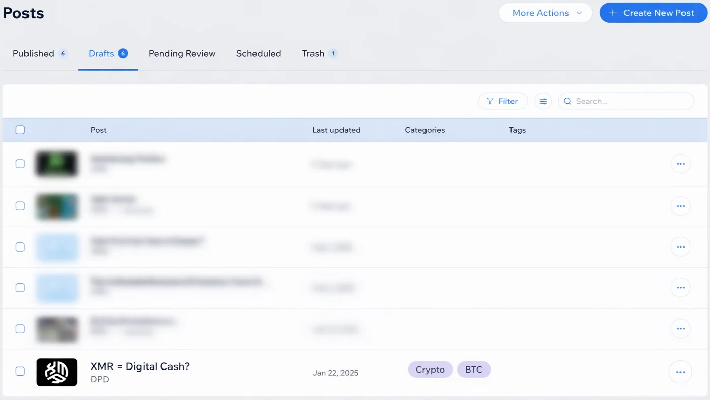
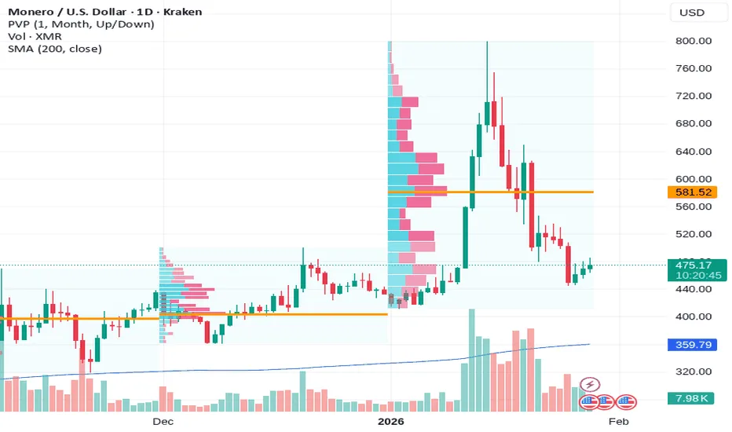

XMR FTW
Wag1,
I wrote the first version of this post back in January 2025. Back then, the delisting wave was in full swing. Binance had already ejected XMR, the EU's MiCA regulations were freshly enforced, and the state was tightening the noose.

I said Monero would survive. That privacy couldn't be killed by regulation. That decentralized infrastructure would route around censorship.
One year later, I'm back to tell you I was right.
What I Wrote Two Years Ago
[I'm leaving this section unedited so you can see what I predicted and what came true.]
In a world where every financial decision you make is being watched, tracked, and recorded, your financial privacy isn't just something nice to have, it's something you need to protect. Cash is disappearing, banks are tightening their control, and corporations are profiting off your personal data. This is where Monero (XMR) steps in.
I get it. The world of crypto can seem overwhelming. With all the scams, promises of quick riches, and fear mongering from the media, it's easy to think it's just a dangerous game. And that's exactly what the traditional financial system wants you to think. Banks, governments, and corporations are working overtime to keep you scared of crypto. They spread anti-crypto propaganda to make sure you stay dependent on their system, where they control your money, your data, and your freedom.
But here's a question. Why do you think they let all these scams go on? Is it because they want to maintain the belief that crypto is a dangerous place where you should expect to lose all your money? or do they want you to believe it's unsafe so you stop thinking for yourself and just stick with the traditional system. I have a sneaking suspicion they've been letting these scams happen to protect themselves? They know that by allowing crypto to be filled with scams, they're pushing people back to the system they control.
Monero isn't like that. Monero isn't a game, and it wasn't designed for speculation or quick wins. It was created to give people like you and me real, untraceable financial freedom. Unlike Bitcoin, where every transaction is visible and traceable, Monero was built to protect your privacy. It uses powerful tools that keep your transactions hidden, no one can see who you're sending money to, how much, or where it's coming from.
What really makes Monero different is that it doesn't just give you privacy, it gives you true freedom. Monero is decentralized, meaning no single person, government, or company controls it. It's not tied to a central authority like a bank or a corporation, so your money is yours, and no one can take it from you. Think of it like cash, where no one can freeze your account or take your money because of your past. Monero coins are completely interchangeable (Fungible) and untraceable, making them the closest thing to digital cash, money that works for you, not against you.
And here's the best part. Monero is for everyone. Unlike other cryptocurrencies that require expensive, specialized hardware to mine, Monero can be mined using the computer or laptop you already own. You don't need to be a tech giant or a billionaire to participate.
Monero is decentralized by design, meaning it's built to give power to everyone, not controlled by any single company or government. This means it's truly for the people.
In a world where governments are phasing out cash, where financial surveillance is the norm, and where your data is constantly being exploited, Monero stands as a solution and a shield. It's more than just a cryptocurrency; it's a movement. A movement to fight back against the control and manipulation of the traditional financial system. A movement for privacy, for freedom, and for the right to control your money without interference.
The future of money doesn't have to be transparent. It doesn't have to be controlled. It doesn't have to be used to maintain the power of the few. With Monero, it can be free, and you can be the one in charge.
One Year Later: What Actually Happened
The state proved every warning correct. Monero didn't just survive, it thrived.
Let me update you on what's changed, what hasn't, and why XMR just hit an all time high while the entire surveillance apparatus tried to kill it.
The 2024 to 2026 Purge
February 2024: Binance announced it would delist Monero, citing that the token no longer met their listing standards. The world's largest exchange just ghost banned the world's strongest privacy coin. XMR dropped 30% in a day.
August 2024: Binance announced it would convert remaining XMR balances to USDC, completing the ejection.
October 2024: Kraken delisted XMR for all European Economic Area customers, bowing to MiCA pressure.
Throughout 2024: Privacy coins faced over 50 delistings from exchanges, the highest since 2021. The pattern was obvious. Every compliant exchange, Binance, Kraken, OKX, etc purged privacy coins to stay on the right side of regulators in the EU, UAE, South Korea, and beyond. The state's message was clear: If you want to operate legally, you cannot let people transact privately.
The Response: The Market Called Their Bluff
By mid-January 2026, Monero hit an all-time high of nearly $800, and market cap climbed past $13 billion. And Hyperliquid launched XMR/USDC perpetual swaps with up to 5x leverage via a permission-less deployment. Monero got derivatives without asking for permission. Throughout the year, GhostSwap (a privacy-focused, non-custodial cryptocurrency exchange) processed over $750 million in BTC/XMR atomic swaps, bypassing centralized exchanges entirely.

Then came the correction. XMR dropped from $800 to around $470 in a matter of days—a brutal 40% crash that had people calling the rally a pump-and-dump.
But here's what they missed: The crash doesn't invalidate the thesis. It proves it.
Volatility is the price of sovereignty. Traditional markets get circuit breakers, trading halts, and bailouts when things get rocky. Monero gets pure, unfiltered market forces. No one can pause trading. No one can reverse transactions. No central authority can step in to "stabilize" the price. That's the point.
The delistings accomplished exactly what they were supposed to prove: Monero works because it doesn't need permission. Atomic swaps now allow users to exchange BTC or ETH for XMR directly from their wallets, without intermediaries or custody risk. The centralized on-ramps died. The decentralized infrastructure filled the gap instantly. The state tried to suffocate Monero by cutting off the oxygen supply. Instead, they just proved it could breathe on its own.
The price doesn't matter as much as the principle. XMR could be trading at $100 or $1000 the network still functions exactly the same. Your transactions are still private. The government still can't freeze your wallet. The system still works without permission.
The 2026 Regulatory Panic
The regulators aren't backing down, they're doubling down. The European Union's DAC8 directive, which came into force on January 1, 2026, requires exchanges and custodians to report detailed user and transaction data to tax authorities. Surveillance isn't optional anymore; it's the law.
And here's the paradox: As regulatory pressure intensifies, demand for privacy solutions rises. They're creating the exact problem they claim to be solving. They're not fighting Monero because it's dangerous to the public. They're fighting it because it's dangerous to them. Every transaction that happens outside their ledger is a transaction they can't tax, track, or control. That's the threat.
Why Monero Actually Works
Let's not beat around the blockchain: most crypto is surveillance theater. With Bitcoin? Every transaction is on a public ledger. Your wallet address might as well be your National Insurance number. Ethereum? Same deal. Even "privacy coins" like Zcash make privacy optional, which means most users don't bother, and the ones who do stand out like a flare in the dark.
Monero is different. Every transaction is private by default. The blockchain itself is completely opaque, no one can see what's happening unless you explicitly give them permission through your view keys. That's the critical difference. With Bitcoin or Zcash, transparency is baked into the public ledger for everyone to see. With Monero, privacy is the default, and you control who gets to see your transactions.
Here's why that matters: Because all XMR coins are indistinguishable on the blockchain, no coin can ever be flagged, censored, or discriminated against. Fungibility is the default. On transparent blockchains like Bitcoin, your coins can be blacklisted if they've touched the "wrong" wallets, exchanges can refuse them, merchants can reject them. With Monero, there's no such thing as a tainted coin because there's no public history to trace. Every XMR is identical. That's what makes it cash.
The Mining Reality Check
One of the biggest lies about crypto is that it's "for the people". Bitcoin mining requires industrial scale hardware farms and cheap electricity contracts. Whereas Ethereum on the other hand has moved to a proof of stake consensus mechanism, meaning only the rich can really afford to validate.
Ngl most crypto is just Wall Street with worse UI. Monero is the exception though. You can mine XMR on the laptop you already own. You don't need an ASIC farm or a stake in a billionaire's validator pool, especially with the January 2026 rollout of RandomX v2.
Monero is optimized for consumer CPU's and generates new blocks every 2 minutes, so every 2 minutes, someone out there is getting paid for securing the network. And that payment is a permanent 0.6 XMR per block, forever. So unlike Bitcoin, where mining rewards eventually run out, Monero's network stays protected indefinitely because there's always an incentive to keep it running.
Why that matters beyond the tech
Decentralization isn't just a buzzword, it's the whole point. This is the difference between a system that serves you and a system that surveils you. Decentralization means resilience. It means no single point of failure, no CEO to arrest, no server farm to raid. The more distributed the network, the harder it is to kill. And they've been trying.
When power is distributed, no single entity can control, censor, or shut down the network. The network stays in the hands of regular people instead of getting captured by whoever has the most money or the most guns. That's what separates real freedom tech from corporate controlled bullshit. Monero's design keeps that power distributed. You can do it on your laptop, and you should.
New Tech Upgrades
While exchanges were busy delisting XMR, the Monero developers were busy making it even harder to track:
The FCMP++ upgrade aims to strengthen Monero's privacy by improving cryptographic proofs for transaction validation, with testing underway in early 2026. Translation: The already-unbreakable privacy just got stronger.
Monero's 2026 priorities include a browser wallet that enables direct XMR transactions without extensions. The tech is getting better, faster, and easier to use—all while regulators try to kill it.
Here's the strategic reality: Can regulators suppress liquidity faster than technology reroutes it? So far, technology leads.
When Theory Becomes Reality
Look, I can talk all day about cryptographic privacy and decentralized networks, but none of that matters if you don't understand what happens when you DON'T have financial privacy.
2023 to 2026, United Kingdom: 453,230 bank accounts were shut down in 2025 alone, which is around ten times more than the 45,091 accounts closed in 2016 to 17. The most high profile case was Nigel Farage, whose account at Coutts was closed in June 2023. Internal documents revealed that Coutts' reputational risk committee had discussed Farage's political stance, describing him as "pandering to racists" and a "disingenuous grifter," with the bank concluding that his views were "at odds with our position as an inclusive organisation".
Whether you agree with Farage's politics or not is irrelevant. The point is that a bank decided his political views made him unsuitable as a customer. And here's what's terrifying: British authorities used a record 1,800 account freezing orders to restrain £240 million of suspicious funds in the financial year that ended in March 2024. No charges required. No trial. Just suspicion.
March 2025, Georgia: The government froze the bank accounts of five human rights organizations, including groups that were helping arrested protesters pay legal fees and medical bills. Organizations providing financial support to detained protesters, helping with fines and legal assistance, reported they received no warning before their accounts were frozen. People caring for sick children, students struggling with debt, all cut off overnight because their money was in the wrong account.
August 2024, Nigeria: A federal court froze 32 bank accounts linked to people who organized protests against bad governance. The court accused them of terrorism financing and cyberbullying for organizing demonstrations. Terrorism financing. For protesting corruption.
This isn't hypothetical. This isn't some dystopian future. This is happening right now, in countries we consider democratic, to people whose only crime was political dissent.
When your bank controls your money, someone else decides what you're allowed to do with it. They can freeze it for donating to the "wrong" protest. They can block it for supporting the "wrong" candidate. They can shut you down without trial, without explanation, without recourse. In the UK, Account Freezing Orders are a civil order that allows the court to prohibit withdrawals or payments where there are reasonable grounds to suspect that the money represents the proceeds of crime. Unlike criminal restraint orders, an AFO does not require a criminal charge, arrest or conviction.
And here's the thing, it doesn't matter if you think you'll never be targeted. It doesn't matter if you're not politically active. The infrastructure for control exists. Once it's built, it only takes one policy change, one new regulation, one shift in who's in power, for you to become the target.
That's why Monero matters. Not because it helps criminals. But because it removes the off switch. No one can freeze a Monero wallet. No government can block your transactions. No bank can tell you what you're allowed to do with your own money.
This is what financial sovereignty actually looks like.
The 2026 Verdict
Everything I said back then was right. Everything the state did to kill Monero failed.
The regulators tried to ban it. The exchanges delisted it. The media ignored it. And XMR hit an all-time high anyway.
Here's the bottom line: In 2026, the question is no longer whether Monero can survive regulation, but whether any other blockchain can offer the same level of financial freedom.
They can't kill what they can't control. And Monero was designed from the ground up to be uncontrollable. The state doesn't want you to have private money. And that's exactly why you need it.
Jargon Key:
Atomic Swaps: Direct peer to peer exchanges between different cryptocurrencies (e.g., BTC for XMR) without using a centralized exchange. No middleman, no custody risk.
Fungibility: The property that makes every unit of a currency identical and interchangeable. A £20 note is a £20 note, no one cares which specific note you have. Monero has this. Bitcoin doesn't.
MiCA: EU regulation that came into force in 2024, requiring crypto service providers to comply with strict AML/KYC rules, which effectively bans support for privacy coins.
RandomX: Monero's mining algorithm, designed to be CPU friendly and ASIC resistant. Keeps mining accessible to regular people instead of industrial farms.
Tail Emission: Monero's permanent block reward of 0.6 XMR per block, ensuring miners are always incentivized to secure the network, even after all coins are mined.
FCMP++: Full Chain Membership Proofs, a major cryptographic upgrade that strengthens Monero's privacy by improving how transactions are validated on the network.
Sources (because I'm not just making shit up):
- Binance Delisting (Feb 2024): CoinDesk - Binance to Delist Monero Privacy Token
- Binance USDC Conversion (Aug 2024): Decrypt - Binance Will Start Converting Monero to USDC
- Kraken Delisting (Oct 2024): Kraken Support - Support for Monero in Europe
- Privacy Coin Delisting Wave: Coinspeaker - 60 delistings in 2024
- 2026 All-Time High: CoinPaper - Monero Price Prediction 2026 & Bitcoin Ethereum News - GhostSwap $750M volume
- DAC8 Directive: European Commission - DAC8 Official Page
- Technical Upgrades: CoinMarketCap - Monero Latest Updates (FCMP++ and browser wallet)
If you've made it this far, large up yourself. Financial privacy isn't a luxury for the paranoid or the criminal. It's a fundamental right that's being stripped away while most people aren't paying attention. Look, I don't write this stuff because I'm trying to sell you something or pump a coin. I write it because watching your bank account become a surveillance tool in real time is fucking disturbing. And seeing Monero survive a coordinated global crackdown proved something important: decentralized systems can still resist institutional pressure. That matters.
Stay Dangerous,
DPD.